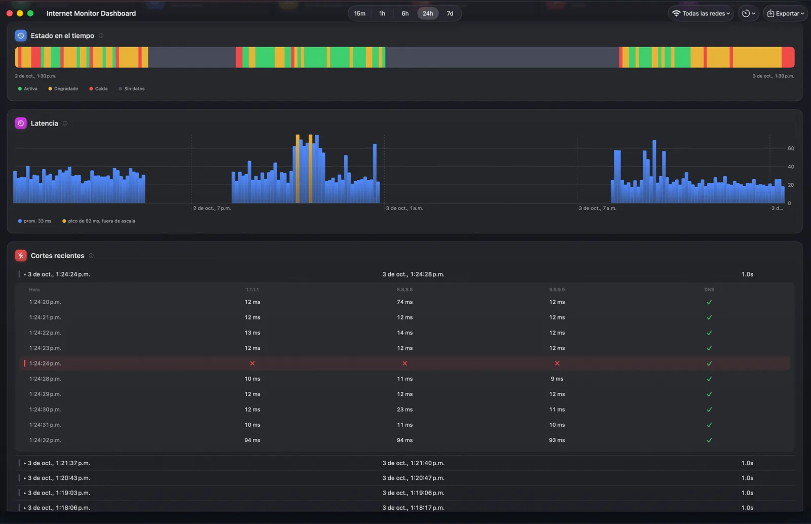

Cortes de hasta un segundo
Atrapa los cortes que tu proveedor jura que no existieron
Internet Monitor revisa tu conexión cada dos segundos, o cada uno si quieres. Cada chequeo fallido se confirma con un reintento inmediato, así que hasta un corte de un segundo queda en tu historial como un hecho, no una sensación.
Expande cualquier corte y ve exactamente qué falló: cada objetivo de sondeo, cada muestra de latencia y si el DNS seguía respondiendo.
